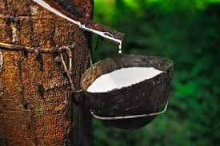

1. Land Selection: Choose well-drained, sandy or loamy soil with good organic matter content. Rubber trees require good drainage to prevent waterlogging. Ensure the land receives adequate sunlight and is located in a region with a suitable climate for rubber cultivation.
2. Variety Selection: Select rubber tree varieties suitable for your region's climate and soil conditions. Consult local agricultural experts or your nearest agricultural extension office for recommendations.
3. Soil Preparation: Clear the land of weeds, rocks, and debris. Prepare pits or basins for planting by digging holes that are about 60 cm (24 inches) wide and deep. You may need to loosen compacted soil at the bottom of the holes.
4. Planting: Obtain healthy rubber tree seedlings from a reputable nursery. Plant one seedling per hole at a depth of about 5-7 cm (2-3 inches) below the soil surface. Space the rubber trees about 6-8 meters (20-26 feet) apart in rows that are 6-8 meters apart.
5. Fertilization: Apply organic matter, such as well-rotted compost, to improve soil fertility. Rubber trees benefit from regular applications of balanced NPK (nitrogen, phosphorus, potassium) fertilizers. Follow local recommendations based on soil tests.
6. Irrigation: Water the rubber tree seedlings regularly, especially during the dry season, to establish a strong root system. Once established, rubber trees are relatively drought-tolerant.
7. Weed Control: Keep the rubber plantation free of weeds, as they can compete for nutrients and water. Use mulch or apply herbicides, if necessary, to control weeds.
8. Disease and Pest Management: Monitor the rubber trees for signs of diseases like leaf blight and pests like mealybugs. Implement pest and disease management practices as needed, such as proper sanitation and pesticide applications.
9. Crop Management: - Prune rubber trees regularly to remove dead or diseased branches and maintain their overall health and shape. - Implement tapping practices once the trees are mature (usually after 6-7 years) to extract latex.
